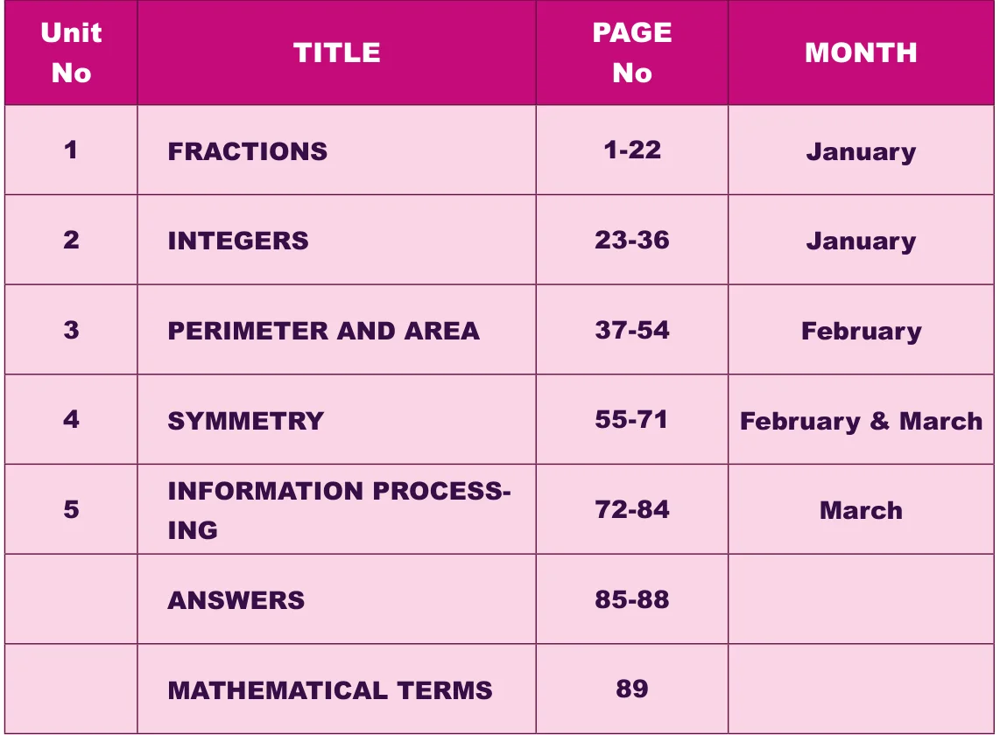

GOVERNMENT OF TAMIL NADU
STANDARD SIX
\(TERM - III\) VOLUME \(- 2\)
MATHEMATICS
A publication under Free Textbook Programme of Government of Tamil Nadu
Department Of School Education
Untouchability is Inhuman and a Crime
Government of Tamil Nadu
First Edition \(- 2018\) Revised Edition \(- 2019\), 2022
Reprint \(- 2020\), 2021, 2023, 2024 (Published under New Syllabus in Trimester Pattern)
NOT FOR SALE
Content Creation
The wise possess all
State Council of Educational Research and Training
© SCERT 2018
Printing & Publishing
Tamil NaduTextbook and Educational Services Corporation
Mathematics is a unique symbolic language in which the whole world works and acts accordingly. This text book is an attempt to make learning of Mathematics easy for the students community.
Mathematics is not about numbers, equations, computations or algorithms; it is about understanding
- William Paul Thurston
Activity Try this/these To enjoy learning Mathematics by doing which provide scope for reinforcement of the content learnt.A few questions
Think
Do you know? To think deep To know additional information and explore yourself! related to the topic to create interest. To understand that Mathematics can be experienced everywhere in nature and real life.
Note Challenge problemsMiscellaneous and important facts To know To give space for and concepts learning more and to face higher challenges in Mathematics and to face Competitive Examinations.
ICT Corner Go, Search the content and Learn more!
Let's use the QR code in the text books! How?
- Download the QR code scanner from the Google PlayStore/ Apple App Store into your smartphone
- Open the QR code scanner application
- Once the scanner button in the application is clicked, camera opens and then bring it closer to the QR code in the text book.
- Once the camera detects the QR code, a url appears in the screen.Click the url and go to the content page.
The main goal of Mathematics in School Education is to mathematise the child's thought process. It will be useful to know how to mathematise than to know a lot of Mathematics.

Text book Evaluation